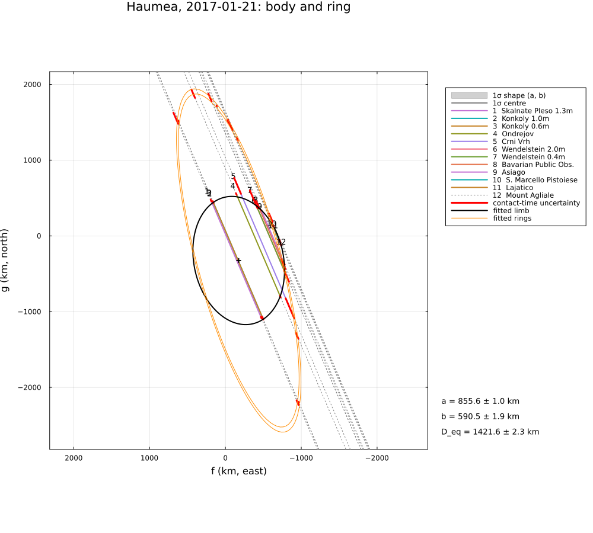
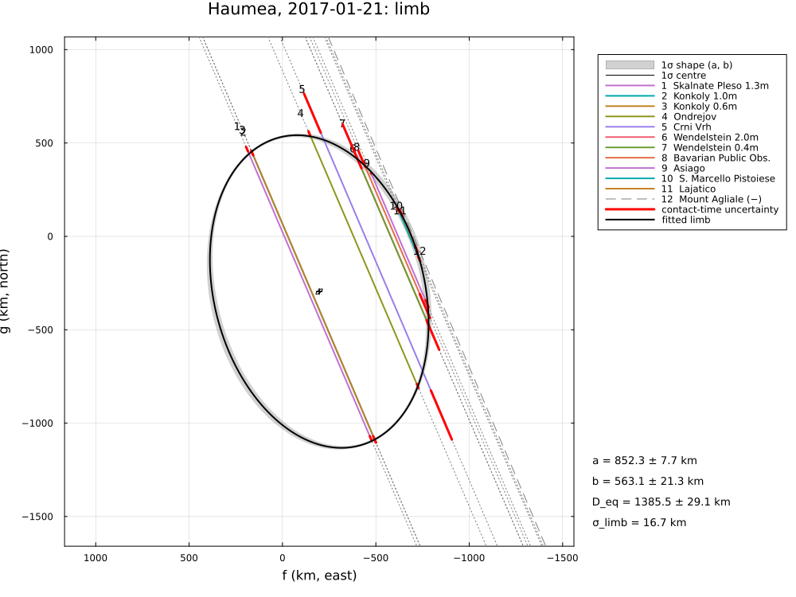
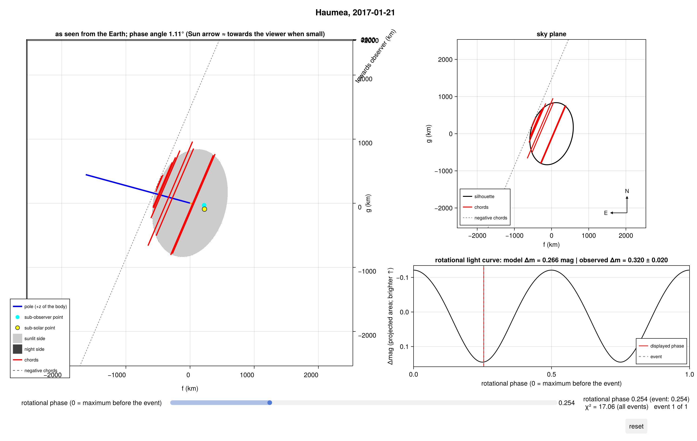

Haumea and its ring, 2017 January 21
The stellar occultation by the dwarf planet (136108) Haumea on 2017 January 21, reduced from the published timings of Ortiz et al. (2017), Nature 550, 219, "The size, shape, density and ring of the dwarf planet Haumea from a stellar occultation": twelve chords of the body from ten sites in central Europe, and brief ring events before and after the main occultation at eight sites (one of which, Mount Agliale, saw only the ring).
The example covers:
- the limb of the body (an ellipse);
- the ring from the mid-times of the ring events, with
RingedLimb: its radius, opening angle and position angle, and its pole – a single event leaves two mirror solutions, as in the paper; the ring's width and opacity (70 km, 0.5) are those of the paper (mid-times do not constrain them); - the 3-D ellipsoid, with the ring plane as Haumea's equator (rotation pole = ring pole), the rotation period, the rotational phase at the event (absolute brightness minimum) and the 2009 light-curve amplitude of 0.32 mag;
- the astrometry.
The data are transcribed in examples/data/haumea_20170121.jl, with the stored JPL Horizons ephemeris, so the script runs offline:
julia --project=. examples/haumea_2017.jl [output_dir] (default: examples/output/haumea_2017)The code is not run when the manual is built. The output after each section is that of the last run of examples/haumea_2017.jl, stored in examples/output/haumea_2017/output.txt.
using Occultations, Random, Printf, Statistics, LinearAlgebra
using Plots
import CairoMakie # saves the GeoMakie maps (Makie figures)
include(joinpath(@__DIR__, "standard_figures.jl"))
include(joinpath(@__DIR__, "data", "haumea_20170121.jl"))
out = length(ARGS) >= 1 ? ARGS[1] : mkpath(joinpath(@__DIR__, "output", "haumea_2017"))
rng = MersenneTwister(2017)
P = HAUMEA_PAPEREvent and geometry (paper values in parentheses)
ev = haumea_event()
D = ev.ca.dist_km
@printf("%d chords (%d with ring events); distance %.2f au, shadow velocity %.2f km/s (%.1f)\n", length(ev.chords),
count(c -> any(x -> x.body === :ring1, c.contacts), ev.chords), D / 1.495978707e8, ev.ca.vel, P.velocity)The geocentric shadow velocity from the Horizons ephemeris is about 10 % above the paper's 13.1 km/s; Earth's rotation at the European sites changes it by only ~0.3 km/s. The fits use the ephemeris velocity throughout, and the sizes below agree with the paper's: the paper's chord lengths must rest on a velocity close to this one, and its 13.1 km/s is unexplained here.
12 chords (8 with ring events); distance 50.48 au, shadow velocity 14.36 km/s (13.1)The limb of the body
The twelve chords; Mount Agliale, which saw only the ring, is a negative chord for the body.
rb = fit_limb(haumea_event(rings=false); rng=rng)
@printf("a′ = %.1f ± %.1f km (%.0f ± %.0f), b′ = %.1f ± %.1f km (%.0f ± %.0f), PA = %.1f ± %.1f° (%.1f ± %.1f), χ²/dof = %.2f\n",
rb[:equatorial_radius]..., P.a..., rb[:semi_minor_axis]..., P.b..., mod(rb[:position_angle][1] + 90, 180) - 90,
rb[:position_angle][2], P.position_angle..., reduced_chi2(rb))
rbs = fit_limb(haumea_event(rings=false); σ_limb=:auto, rng=rng)
@printf("with σ_limb = %.1f km: a′ = %.1f ± %.1f, b′ = %.1f ± %.1f km, PA = %.1f ± %.1f°\n", rbs.problem.σ_limb,
rbs[:equatorial_radius]..., rbs[:semi_minor_axis]..., mod(rbs[:position_angle][1] + 90, 180) - 90,
rbs[:position_angle][2])a′ = 853.7 ± 1.7 km (852 ± 2), b′ = 579.6 ± 8.7 km (569 ± 13), PA = -77.2 ± 0.8° (-76.3 ± 1.2), χ²/dof = 2.71
with σ_limb = 16.7 km: a′ = 852.3 ± 7.7, b′ = 563.1 ± 21.3 km, PA = -75.5 ± 1.4°The ring
The body and a circular ring in the plane of the ring pole, concentric with it. The ring events are mid-times: they fix the projected ring ellipse (radius, |B| and P), not its width; width and optical depth are fixed at the paper's 70 km and apparent opacity 0.5 (τ_N = −|sin B| ln(1 − p′)). The plane and its mirror image give the same ellipse, and the same χ²: the fit starts from the paper's preferred pole, then from the mirror plane of its result (and back, if the mirror fits better – the χ² surface has local minima).
τN = -sind(P.ring_B[1]) * log(1 - P.ring_opacity)
model = RingedLimb(EllipseLimb(); rings=1)
ringfit(pole) = fit_limb(ev; model=model, fix=[:ring1_width, :ring1_tau],
init=Dict(:ring1_width => P.ring_width, :ring1_tau => τN, :ring_pole_ra => pole[1],
:ring_pole_dec => pole[2], :ring1_radius => P.ring_a[1]), starts=4, rng=rng)
r1 = ringfit((P.ring_pole1[1][1], P.ring_pole1[2][1]))
u = EventContext(ev).u
# the mirror plane: all other parameters from the given solution, the pole mirrored (opening −B)
function mirrorfit(r)
init = Dict(n => v for (n, v) in zip(r.names, r.values))
init[:ring_pole_ra], init[:ring_pole_dec] = Occultations._ring_pole(-r[:ring_opening][1], r[:ring_pa][1], u)
return fit_limb(ev; model=model, fix=[:ring1_width, :ring1_tau], init=init, starts=4, rng=rng)
end
r2 = mirrorfit(r1)
# the fit is multimodal: if the mirror found a lower χ², solution A restarts from its mirror
r2.chi2 < r1.chi2 - 1e-3 && (r1 = mirrorfit(r2))
antipode(α, δ) = (mod(α + 180, 360), -δ)
for (label, r) in (("solution A", r1), ("solution B (mirror)", r2))
α, δ = r[:ring_pole_ra][1], r[:ring_pole_dec][1]
@printf("%-20s χ² = %6.2f: ring radius %.0f ± %.0f km, B = %+.2f ± %.2f°, P = %.2f°; pole (%.1f, %+.1f)°, antipode (%.1f, %+.1f)°\n",
label, r.chi2, r[:ring1_radius]..., r[:ring_opening]..., r[:ring_pa][1], α, δ, antipode(α, δ)...)
end
R, B, Pr = r1[:ring1_radius][1], r1[:ring_opening][1], r1[:ring_pa][1]
@printf("apparent ring ellipse: a′ = %.0f km (%.0f −%.0f +%.0f), b′ = %.0f km (%.0f ± %.0f), PA of the minor axis %.1f° (%.1f ± %.1f), |B| = %.1f° (%.1f ± %.1f)\n",
R, P.ring_a..., R * abs(sind(B)), P.ring_b..., mod(Pr + 90, 180) - 90, P.ring_pa..., abs(B), P.ring_B...)
@printf("published poles: solution 1 (%.1f, %.1f)°, solution 2 (%.1f, %.1f)°; Hi'iaka's orbit pole (%.1f, %.1f)°\n",
P.ring_pole1[1][1], P.ring_pole1[2][1], P.ring_pole2[1][1], P.ring_pole2[2][1], P.hiiaka_pole...)
println("(a pole and its antipode describe the same plane; the fit reports the northern one)")
for x in check_negative_chords(rbs) # Mount Agliale, which saw only the ring
@printf(" %s (ring only): %s, %.0f km from the limb of the body\n", x.chord, x.conflict ? "CROSSES" : "consistent",
x.distance)
endsolution A χ² = 73.12: ring radius 2310 ± 5 km, B = +13.84 ± 0.09°, P = 285.26°; pole (105.1, +10.2)°, antipode (285.1, -10.2)°
solution B (mirror) χ² = 73.12: ring radius 2310 ± 5 km, B = -13.84 ± 0.09°, P = 285.26°; pole (132.5, +18.3)°, antipode (312.5, -18.3)°
apparent ring ellipse: a′ = 2310 km (2287 −45 +75), b′ = 552 km (541 ± 15), PA of the minor axis -74.7° (-74.3 ± 1.3), |B| = 13.8° (13.8 ± 0.5)
published poles: solution 1 (285.1, -10.6)°, solution 2 (312.3, -18.6)°; Hi'iaka's orbit pole (283.0, -10.6)°
(a pole and its antipode describe the same plane; the fit reports the northern one)
Mount Agliale (ring only): consistent, 9 km from the limb of the body3-D shape: the ring plane as the equator
Haumea's equator in the ring plane: the rotation pole is the ring pole (each mirror solution in turn, fixed). The rotation period is known (3.915341 h); at the event Haumea was at its absolute brightness minimum (rotational phase 0.25 after a maximum, modulo ½ for an ellipsoid); the HST light curve of 2009 gives an amplitude of 0.32 mag (mid-2009 assumed).
t = ev.tref
amp = RotationalAmplitude(Epoch("2009-07-01T00:05:00"), P.amplitude_2009, 0.02)
phase = RotationalPhase(t, 0.25, 0.02)
for (label, r) in (("solution A", r1), ("solution B", r2))
α, δ = r[:ring_pole_ra][1], r[:ring_pole_dec][1]
prob = LimbProblem(haumea_event(rings=false); model=EllipsoidLimb(principal=true), amplitudes=[amp], phases=[phase],
σ_limb=rbs.problem.σ_limb, fix=[:pole_ra, :pole_dec],
init=Dict(:a => 1100.0, :b => 850.0, :c => 550.0, :pole_ra => α, :pole_dec => δ, :W0 => 0.0,
:period => P.period_h, :center_f => rbs[:center_f][1], :center_g => rbs[:center_g][1]),
bounds=Dict(:a => (300.0, 2500.0), :b => (300.0, 2500.0), :c => (200.0, 2500.0)))
sols = [fit(prob; rng=MersenneTwister(k), starts=12) for k in 1:3]
r3 = sols[argmin([s.chi2 for s in sols])]
@printf("%s: a = %.0f ± %.0f, b = %.0f ± %.0f, c = %.0f ± %.0f km, D_eq,V = %.0f km, aspect %.1f°, χ² = %.2f\n", label,
r3[:a]..., r3[:b]..., r3[:c]..., 2r3[:volume_equivalent_radius][1], r3[:aspect][1], r3.chi2)
label == "solution A" && (global r3A = r3)
end
@printf("published: a = %.0f ± %.0f, b = %.0f ± %.0f, c = %.0f ± %.0f km, D_eq,V = %.0f ± %.0f km\n", P.axes_3d[1]...,
P.axes_3d[2]..., P.axes_3d[3]..., P.D_eq_volume...)Solution A reproduces the paper's ellipsoid. The mirror pole, which fits the ring equally well, gives a nearly equator-on view (aspect 76°) in which the axes a and c are degenerate: the occultation alone cannot choose between the two, the paper prefers solution 1 (A) because the ring is then coplanar with Hi'iaka's orbit.
solution A: a = 1153 ± 24, b = 852 ± 7, c = 503 ± 24 km, D_eq,V = 1582 km, aspect 103.8°, χ² = 17.06
solution B: a = 1655 ± 3833, b = 853 ± 8, c = 432 ± 885 km, D_eq,V = 1696 km, aspect 76.2°, χ² = 17.67
published: a = 1161 ± 30, b = 852 ± 4, c = 513 ± 16 km, D_eq,V = 1595 ± 11 kmAstrometry
a = astrometry(rbs)
@printf("RA %s Dec %s at %s UTC (σ %.2f, %.2f mas); offset from JPL Horizons Δα cos δ = %+.2f, Δδ = %+.2f mas\n",
a.ra_str, a.dec_str, isot(a.epoch; digits=1), a.ra_err, a.dec_err, a.offset_ra, a.offset_dec)
println("(the position refers to the star position of the paper; Hi'iaka shifts Haumea from the system's")
println(" barycentre by up to ≈ 1232/(1 + r) mas, r the mass ratio)")RA 14 12 03.19774 Dec +16 33 58.6681 at 2017-01-21T03:06:08.0 UTC (σ 0.52, 0.39 mas); offset from JPL Horizons Δα cos δ = -5.38, Δδ = -8.07 mas
(the position refers to the star position of the paper; Hi'iaka shifts Haumea from the system's
barycentre by up to ≈ 1232/(1 + r) mas, r the mass ratio)Figures
savefig(plot(r1; title="Haumea, 2017-01-21: body and ring", size=(1000, 900)), joinpath(out, "haumea_ring.png"))
savefig(plot(rbs; title="Haumea, 2017-01-21: limb", size=(1000, 750)), joinpath(out, "haumea_limb.png"))
CairoMakie.save(joinpath(out, "haumea_occview.png"), occview(r3A))
# the standard figures: limb fits (default, 68.3 % region, as the paper), maps (prediction, post-fit,
# comparison) and the globe
standard_figures("haumea", rbs; out=out, paper=(fit=rb, uncertainty=:pointwise, nsigma=1),
projection="+proj=laea +lon_0=14 +lat_0=47", limits=(2, 28, 38, 56), window=600, marks=60)
println("figures written to ", out)The body and the ring with the chords and the ring events:

The limb of the body, and the 3-D ellipsoid with the ring pole as its rotation axis:

